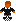

- News
Eat The Whistle 3.6 has been released, click here to download it for Windows, Mac and Linux (other binaries will be available in the next weeks, feel free to contribute your own)!
This is mainly a maintenance version that fixes many bugs and clean up the code for further changes and major features completion like internet playing. Some highlights of the new version:
- OSX universal application bundle, compatible with Panther, Tiger and Leopard
- Linux .autopackage installer (click here for more info about Autopackage).
- TONS of bugs fixed. The game is stable now, also for long gaming sessions.
- Code cleanup: removed most of the italian variables and comments from the source.
-  Introduction
Eat The Whistle is an OpenSource soccer game originally developed by Hurricane Studios as commercial product for the Amiga platform. It has a lot of features never seen in other soccer games. It has been released under the GPL licence version 2 in the year 2002.
The original Amiga version has been made portable with the help of the SDL library, now ETW runs on a wide range of machines, this site will provide precompiled binaries for the following platforms:
- Windows - compatible with the versions: 95, 98, ME, 2000, XP, untested with Vista.
- Linux x86 - since the game is in plain C it should work any distro of the latest 5/6 years, try first the packaged version (.package file), if you have no luck the binary tar.
- MacOSX - It's universal binary, so it needs 10.3.9 or better.
...but it's possible to make the game run on every platform supported by SDL, just download the source archive and try to compile it, you need of course a C compiler and maybe some experience with makefiles, if you build the game for a new platform please contribute the patches to make the build possible, I will add the patches to the sources in CVS.
If you like the game please consider about supporting it with a donation:
 .
.
-
 Features
Features - System friendly. Run in a window or fullscreen, can be played also on old machines (runs pefectly on a P200).
- World cup, leagues, cups with real teams (with slightly modified names).
- Can be played through keyboard or joypad/joysticks (USB or Gameport).
- Network playing through TCP/IP (not yet finished).
- Very intuitive control method with acceleration/deceleration.
- More than 550 frames of animations for the players, 300 for the goalkeeper, 100 for the refree and a lot of other graphics.
- 30 different fields, including muddy, frozen and wet.
- Fouls, corners, throw-in with an intuitive control system.
- Role playing. (You can play a match as the whole team or only as a player).
- About every thing in the game is configurable via intuitive menus.
- Game Tactics and tactic editor.
- Heading and other special shots with intuitive controls.
- Team players (with individual stats) and team editor (the editor is actually available only for AmigaOS).
- Import SWOS (Sensible word of soccer) teams.
- Arcade mode with powerups, bonuses... (something like Speedball II).
- Replays (with load/save option).
- Spoken comment (actually broken).
-
 Configurability
Configurability
Eat The Whistle it's probably one the most configurable soccer game written, it has tons of options, here are some examples (click here for a picture that shows one of the configuration menus):
- you can play it with Joystick, two-button joystick, joypad or keyboard (two different, and configurable keyboard control methods), the joypad control is very similar to the Playstation's Pro Evolution one.
- There are 8 different pitch types and 7 different pitch conditions, the pitch condition
modify the aspect of the field! You can play on a wet field or on a snow covered one,
in this case the players will wear gloves
 !
! - You can choose the daytime of the match, if the match is played in the evening the players have 4 shadows.
- You can choose screenmode (example hires picture), radar size, if you want to see always the match result or the active player name...
- You can play friendly matches, cups, leagues, world cups (picture) , training, penalties, free kicks.
- There is a great Arcade Mode with two different pitches that seem an arena and with 11 custom "arcade teams" (picture)(one is the secret one) and you can do a challenge similar to a beat'em'up with the gameplay that is mix between speedball and a soccer game! (picture)
- There are a LOT of cheat modes!
-
 Extras
ExtrasHere are the Eat The Whistle related files you can find in my page, if you have something intresting (teams, translations, tactics...) that you want to share send them to me!
- ETW teams page! (30-3-99)
- Frequently Asked Questions V1.2 (8-1-99)
- Team Editor V1.3 (6-1-99)
- SWOS to ETW team converter! (4-1-99)
- ASCII Manual (12-12-98)
These are mostly old Links to the Amiga version stuff but some can be useful, if you need to use the binaries you can use UAE Amiga Emulator:
If you have problems to download these files you can find most of these files in any Aminet mirror!

(click to enlarge)


 gabrielegreco AT gmail.com,
gabrielegreco AT gmail.com, {kind=link}
{kind=link}
{kind=link}
{kind=link}
{kind=link}